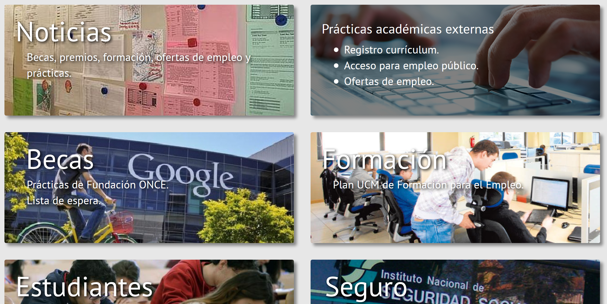
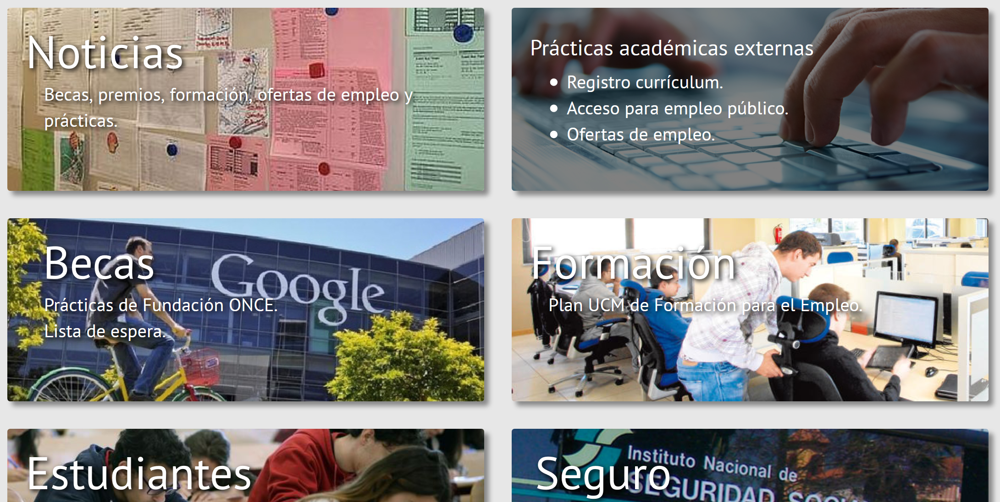

MEMORIA (GRUPO 9)
Introducción
Esta es nuestra propuesta de rediseño de la página oficial de la Oficina de Prácticas y Empleo. Hemos decidido implementar una simulación de cómo iría el flujo de la página por todos los contenidos. Esto quiere decir, que en algunos sitios hemos indicado lo que se podría hacer, sin necesidad de implementarlo, o lo que pasaría. Ejemplos de esto son cambiar el cursor a puntero cuando se podría hacer clic en algún sitio que te llevaría a otro, o el icono de menú cuando se redimensiona la ventana hasta el tamaño mínimo, una vez entrado en cualquiera de las secciones.
Modelo responsive
Como ya hemos comentado, existe la posibilidad de redimensionar la ventana y recolocar los elementos de forma más o menos inteligente. Un ejemplo claro es en la misma ventana principal o en la sección de noticias, que presentaron algunos problemas pero ningun reto no antes logrado por nosotros. Además, no nos gusta del todo Bootstrap y hemos decidido hacernos los duros. Total, una cosa más que se aprende.


Patrones usados
A simple vista, se pueden apreciar algunos de los patrones más comunes dados en la asignatura. La elección de los mismos se ha basado en ofrecer una interfaz visual y al mismo tiempo simple para facilitar al usuario la búsqueda de información dentro de la página.
Grid of Equals
Muestra el contenido en una rejilla donde todos los elementos siguen una plantilla común y enlazan a las páginas correspondientes. La página contiene varios contenidos de igual importancia, que queremos presentarlos al usuario. Tenemos en cuenta los dispositivos pequeños, cambiando la disposición de las cuadrículas a vertical cuando se encoge la ventana.
Nada más entrar en la página, podemos ver seis tarjetas del mismo tamaño, cada una correspondiente a una sección de la web. Todas ellas se comportan de la misma manera: ofrecen el título de la sección, seguido de un subtítulo de orientación. Si movemos el cursor encima de cada tarjeta, podemos observar que la información se amplía por medio de una animación sencilla.
 

Deep Background
Hemos tomado ideas de este patrón y las hemos aplicado a zonas concretas de la página web.
Se ve claramente en cada tarjeta un fondo característico de lo que el usuario puede esperar encontrar dentro de cada sección. Para llevar el fondo a segundo plano, hemos resaltado el texto con sombra, y cuando sobrevolamos la tarjeta con el cursor, el fondo retrocede aún más a segundo plano, con un fondo negro medianamente opaco y colocado justo encima de la imagen.
Este patrón también se puede apreciar en la sección de Noticias, concretamente en el slideshow con las noticias más importantes. Aquí conseguimos un efecto similar a las tarjetas de la pantalla principal, provocando que el usuario quiera pinchar en una de las noticias. Si lo hace, le llevaría a un enlace externo con la noticia. Dado que es una simulación, como hemos indicado en la introducción, no vimos necesario la implementación de esta característica, aunque sí hemos puesto el cursor a puntero para sugerir la posibilidad.
Animated Transition
Queríamos conseguir que el usuario se sintiese relajado en todo momento. Para esto, hicimosque la página diese la impresión de estar en todo momento trabajando, activa. Estos efectos se aprecian fácilmente en cada transición de una página a otra, en el slideshow, en el menú...
Few Hues, Many Values
Simplemente, porque rojo. Rojo es el color de la UCM, y hemos usado varias tonalidades. Además es un color cálido pero este granate es un poco más neutral para relajar la vista. Por cierto, el rojo chillón que tiene la página de CFI (guiño, guiño) nos pareció algo dañino, por lo que nosotros hemos usado un tono rosado para marcar las opciones que se van a o se han seleccionado. También hemos usado el mismo rojo para los títulos y palabras resaltadas.
Grises. Es un color que además de reducir el daño proporcionado por las pantallas, se lleva bien con todos los demás colores. Lo hemos usado en el fondo de la página, reutilizando el original. Además, hemos coloreado los submenús de un gris oscuro, separando los distintos elementos con una fina línea horizontal de un gris más claro. De forma similar al rosado, los elementos que se vayan a seleccionar se marcan en un gris intermedio.
Por cierto, el submenú funcionaría exactamente igual que en cualquier otra página. Esto es, cuando haces hover sobre cualquier pestaña podrías acceder a cualquier subsección directamente. No lo hemos implementado para no meternos en problemas, como tener que hacer un html por cada subsección. Preferimos favorecer el simular la transición entre subsecciones mediante javascript.
Escape Hatch
Este patrón trata de ofrecer una vía de escape a la página principal, normalmente por medio del logo oficial o el título de la página.
Estaba claro que íbamos a incorporar este patrón, y así nos ahorramos botones innecesarios.
Sitemap Footer
Queríamos meter un pie de página, pero desde el primer momento tuvimos claro que no iba a servir para encontrar contenido, ya que se pelearía con el simple menú que hemos colocado en la parte superior. Pero queríamos incorporar la información legal, el enlace a esta memoria, y las redes sociales, por lo que adoptamos algunas características de este patrón, sin aplicarlo como tal (mapa completo de la web). De esta manera nos libramos de tener que incluir una pestaña más en el menú principal, aunque el 7 sea un número muy bonito.
Como no es mucha información, nos hemos podido permmitir dejar el footer en posición fija. Y además, del mismo color que la barra principal.
Corner Treatments
Al tener tantos paneles de contenido, tampoco queríamos que la interfaz resultase tan agresiva, por lo que decidimos redondear las esquinas.
Es importante mencionar que no todas las esquinas están redondeadas, porque quedaría demasiado uniforme. El submenú por ejemplo, mantiene elementos afilados en lista. Quedaría horrible redondear esas esquinas. Algo parecido pasa con las esquinas inferiores de cada pestaña del menú principal. ¡Ni en broma!


Contrasting Font Weights
Se puede apreciar sutilmente una diferencia entre los tamaños de letra en las tarjetas de la pantalla principal, así como en el slideshow de la sección Noticias. Esto facilita al usuario la posibilidad de leer lo más importante en primer lugar.
Titled Sections
Hemos organizado los contenidos de la página en tarjetas que cubren la pantalla. Cada una tiene su título y están separadas levemente entre ellas. Se puede apreciar en la sección de Noticias, a modo de noticias individuales, o en cada una de las demás secciones.


Patrones descartados
Breadcrumbs
Al principio teníamos una barra gris justo debajo de la principal, pero al cambiar la posición del menú del lateral izquierdo a la barra superior, nos dimos cuenta de que teníamos información redundante. Para cumplir la función de las migas, nos decantamos por resaltar en un color más claro la sección en la que se encuentra el usuario. Win win.
Otras influencias
Material Design
Ahora prácticamente casi todo diseño minimalista está influenciado por Google, pero hemos prestado especial atención en lograr un efecto de capas 3D característico de estas directrices. Para ello, hemos combinado los filos con las sombras.